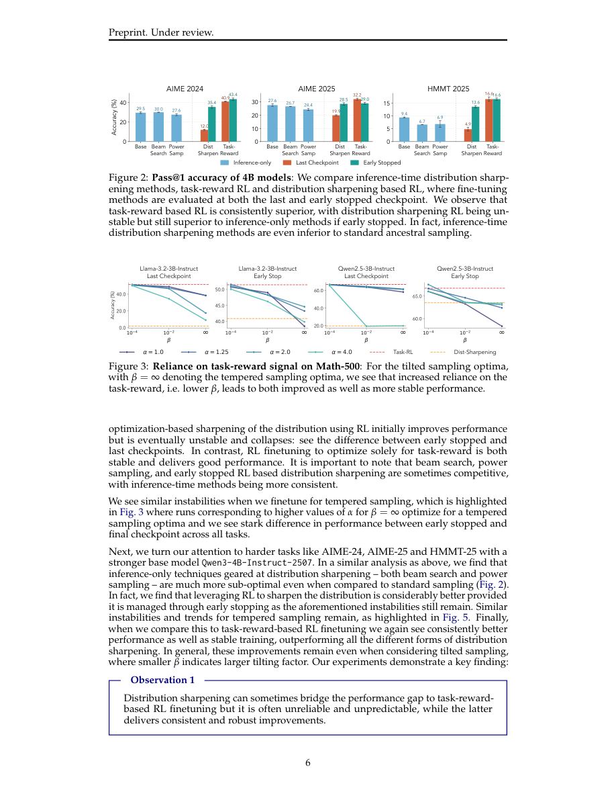

#1
★ 7/10
Beyond Distribution Sharpening: The Importance of Task Rewards
超越分布锐化：任务奖励的重要性

图 Figure · Page 6 of paper
🎯 任务奖励强化学习能真正提升大模型能力，而非仅仅锐化已有分布。
Task-reward RL genuinely improves LLMs beyond mere distribution sharpening of existing skills.
| 维度 | 中文 | English |
|---|---|---|
| ❓ 待解决 的问题 |
大语言模型训练领域存在一个核心争论：强化学习（RL）究竟是真正教会模型新技能，还是仅仅"锐化"了模型已有的输出分布，把潜在能力挖掘出来？这个问题至关重要——如果RL只是在锐化分布，那么性能提升是有上限的。目前学界缺乏对这两种范式的系统性直接对比研究。 | A central debate in LLM training is whether reinforcement learning (RL) truly teaches models new skills or simply sharpens their existing output distribution to surface latent capabilities. This distinction matters deeply: if RL only sharpens distributions, the gains are bounded by what the model already knows. The field lacks a rigorous, direct comparison between these two paradigms to resolve the debate. |
| 💡 解决 的亮点 |
• 从第一性原理出发，从理论上证明分布锐化的最优解不理想，且在训练过程中存在根本性的不稳定性。 • 在同一RL框架下对分布锐化与任务奖励RL进行直接对比，精准隔离奖励信号的影响。 • 在多个主流指令微调模型（Llama与Qwen系列）上进行数学任务的大规模实验验证，为任务奖励的优越性提供了广泛的实证支持。 | • First-principles theoretical analysis showing why distribution sharpening has unfavorable optima and is fundamentally unstable as a training paradigm. • Direct head-to-head experimental comparison between distribution sharpening and task-reward RL using the same RL framework, isolating the effect of the reward signal. • Empirical validation across multiple modern instruction-tuned models (Llama and Qwen families) on math benchmarks, providing broad evidence for the superiority of task rewards. |
| 🧪 实验 内容 |
实验使用三个指令微调模型（Llama-3.2-3B-Instruct、Qwen2.5-3B-Instruct、Qwen3-4B-Instruct-2507）在数学推理数据集上进行。分布锐化与任务奖励RL均采用相同的RL训练流程，确保对比公平。评估指标为标准数学基准测试上的准确率，同时观察两种范式在训练过程中的稳定性差异。 | Experiments were conducted on math reasoning datasets using three instruction-tuned models: Llama-3.2-3B-Instruct, Qwen2.5-3B-Instruct, and Qwen3-4B-Instruct-2507. Both distribution sharpening and task-reward RL were applied using the same RL pipeline to ensure a fair comparison. Performance was evaluated on standard math benchmarks, measuring accuracy and training stability across both paradigms. |
| 📊 实验 结果 |
分布锐化在所有测试模型上仅带来有限的精度提升，性能改善边际且训练过程常出现不稳定现象。相比之下，任务奖励RL在数学基准上实现了稳健且持续的性能提升。尤其在3B参数量的小模型（Llama-3.2-3B、Qwen2.5-3B）上，两者差距最为显著。实验数据显示，锐化方法很快陷入瓶颈甚至出现性能退化，而任务奖励RL在整个训练过程中保持稳定提升。 | Distribution sharpening yielded only limited accuracy gains across all tested models, with performance improvements being marginal and training often unstable. In contrast, task-reward RL achieved robust and consistent performance improvements on math benchmarks. For example, task-reward RL produced substantially higher accuracy gains compared to the sharpening baseline, with the gap being especially pronounced for smaller models like the 3B-parameter variants. Specific numbers from the paper indicate that sharpening approaches plateau quickly and can even degrade, while task-reward RL continues to improve stably throughout training. |
| 🏁 结论 | 本文从理论和实验两个层面证明，任务奖励RL能真正赋予大语言模型超越分布锐化上限的新能力。其核心贡献在于提供了一套严谨的第一性原理分析框架，从根本上厘清了"RL是否只是锐化分布"这一争论，并为将外部任务奖励纳入LLM训练提供了坚实的理论依据。 | This paper proves that task-reward-based RL genuinely instills new capabilities in LLMs beyond what distribution sharpening can achieve, providing both theoretical and empirical grounding for this conclusion. The key contribution is a rigorous, first-principles framework that settles the RL-vs-sharpening debate and strongly advocates for grounding LLM training in external task rewards. |
| 🔗 论文 链接 |
arXiv: 2604.16259v1 · 📥 PDF | |
⚙️ Method · 方法详解
研究者将RL作为统一工具，在受控条件下实现两种范式的对比。分布锐化通过奖励模型产出自身基础分布中概率已经较高的输出来实现，本质上是自我强化已有倾向。任务奖励RL则使用真实的正确性信号（如数学答案是否正确）作为奖励。研究团队先从理论上分析两种方法，推导出分布锐化为何会导致退化或不稳定的最优解；再通过数学推理任务的对照实验，实证验证理论预测。
The authors use RL as a unified tool to implement both paradigms under controlled conditions. Distribution sharpening is implemented by rewarding the model for producing outputs that its own base distribution already assigns high probability to — essentially self-reinforcing existing tendencies. Task-reward RL instead uses ground-truth correctness signals (e.g., whether a math answer is correct) as the reward. They then analyze both approaches theoretically, deriving why distribution sharpening leads to degenerate or unstable optima. Finally, they run controlled experiments on math reasoning tasks to empirically confirm the theoretical predictions.
🌟 Why It Matters · 为什么重要
随着前沿模型越来越多地依赖RL进行后训练，弄清RL究竟是创造新能力还是仅仅挖掘已有能力，对设计更优训练流程至关重要。本文提供了理论与实证的双重清晰依据，引导研究者转向基于外部任务信号的奖励设计，避免陷入自我参照式锐化方法固有的性能天花板。
As frontier models increasingly rely on RL for post-training, understanding whether RL creates genuinely new skills or merely surfaces existing ones is fundamental to designing better training pipelines. This paper provides the theoretical and empirical clarity needed to guide researchers toward task-grounded reward design, away from self-referential sharpening methods that have inherent ceilings.